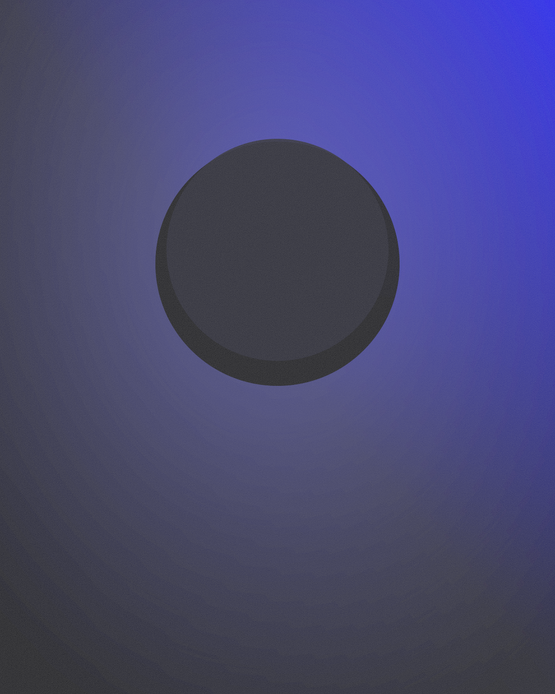

About

I am a physicist who never stopped carrying a camera — or a photographer who never stopped doing physics, depending on the day. My research concerns light and how it carries information; my photography is an excuse to keep looking at the world the equations describe.
The two practices feed each other. Optics taught me why lenses draw the way they do; photography keeps the physics honest, tied to weather, dust and waiting. Everything on this site — the pictures and the papers — comes from the same habit of paying attention.
- Based inYour city
- Research fieldYour field of physics
- Photographs withYour camera
- Since2020
Say hello
crowtao2020